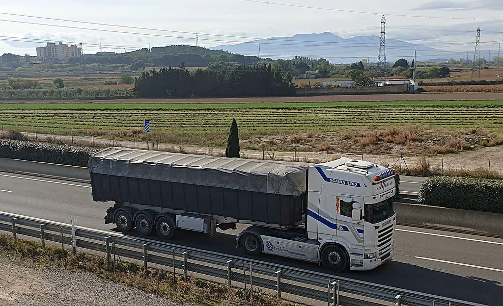

Truckbandenservice in West Maas en Waal
Bandenpech met uw vrachtwagen of trailer in West Maas en Waal? Wij komen naar u toe, of u nu op een bedrijventerrein staat, bij een klant aan het lossen bent of op de vluchtstrook. Een lekke band, een klapband of een band die langzaam leegloopt: we vervangen of repareren hem ter plekke.

Bandenservice op locatie in West Maas en Waal
De gemeente West Maas en Waal bestaat uit 8 woonplaatsen, waaronder Alphen, Altforst, Appeltern en Beneden-Leeuwen. In al deze kernen, en op de bedrijventerreinen eromheen, kunt u op ons rekenen.
Rond West Maas en Waal rijden we vaak over de A15. Bandenpech op de A15 ter hoogte van West Maas en Waal? Zet uw alarmlichten aan, ga met uw hesje achter de vangrail staan en geef het nummer van de dichtstbijzijnde hectometerpaal door. Dan weten we precies waar u staat en in welke rijrichting.
Waar wij u helpen in West Maas en Waal
- Op de vluchtstrook en bij verzorgingsplaatsen langs de A15
- Op bedrijventerreinen en bij distributiecentra in West Maas en Waal
- Op uw eigen terrein, in de remise of op de parkeerplaats
- Bij een klant, tijdens het laden of lossen
Wat wij doen
Bandenpech in West Maas en Waal
Komen jullie ook naar Alphen?
Ja. Alphen valt binnen de gemeente West Maas en Waal en daar rijden wij gewoon naartoe. Geef bij uw melding de straat, het bedrijventerrein of de weg door.
Wat moet ik doen bij een klapband op de A15?
Rijd rustig door naar de vluchtstrook of een parkeerplaats als dat veilig kan. Zet uw alarmlichten aan, trek uw hesje aan en wacht achter de vangrail. Bel ons met de hectometerpaal en de rijrichting, of deel uw live-locatie via WhatsApp.
Welke banden kunnen jullie vervangen in West Maas en Waal?
Stuur-, aandrijf- en trailerbanden van vrachtwagens, trekkers, opleggers en bakwagens, in gangbare maten zoals 315/70 R22.5, 315/80 R22.5 en 385/65 R22.5. Geef de bandmaat door als u die weet; die staat op de zijkant van de band.
Hoe meld ik bandenpech in West Maas en Waal?
Bel 085 744 4166 of stuur een WhatsApp met uw kenteken, de locatie en welke band het is. Op onze meldpagina tikt u de band gewoon aan in een tekening van uw voertuig.
Wat kost de bandenservice in West Maas en Waal?
Dat hangt af van de band, de maat en de plek waar u staat. U hoort de prijs vooraf, zodat u niet voor verrassingen komt te staan.
Bandenpech in West Maas en Waal?
Wij komen naar u toe. Bel of app ons direct, dan zeggen we wanneer we er zijn.